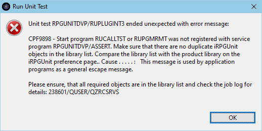
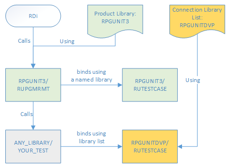

Error: Duplicate iRPGUnit Objects
Symptom
This page explain why the following error message is shown and how to solve the problem:

Reason
The reason for this problem is that the iRPGUnit start program RUCALLTST or RUPGMRMT uses
a different RUCALLTST service as your test suite. For example, that happens, when:
- The iRPGUnit start program binds to RUCALLTST using a hard-coded library specified at the CRTPGM command.
- And your test suite service program binds to RUCALLTST using the library list.
And the product library specfied on the iRPGUnit preference page is different from the one in library list of the RSE connection.
In this case the relationships between the objects look like this:

Solution
There are two options to solve the problem:
- Change the RSE connection and replace the iRPGUnit library with the library specified on the preferences page.
- Go to the preferences page and change the product library to *LIBL.